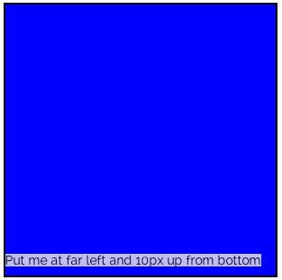
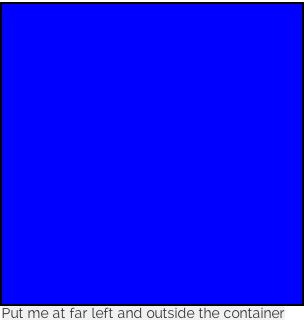

CSS Positioning Review
In the following examples, we will review the following CSS positioning values: static, fixed, relative, and absolute.
To complete these exercises, you will need to be modifying a stylesheet within this assignment's directory. There is already a blank CSS stylesheet in this directory which is where you will be adding your styles. Look for the stylesheet titled students.css and add your custom CSS rules there. Don't forget to save this file each time you make changes! Afterward, refresh the page to see if your CSS successfully matched the layout at hand.
IMPORTANT NOTE: for each example, there is a "wrapper" div that wraps the HTML elements you will be styling. You will need to target each example's wrapper div and THEN its HTML elements in your custom CSS style rules. Each wrapper div has an ID corresponding to the example number, in the following format: example-1
Thus, the ID will first contain the word "example" followed by a dash followed by the respective example number. Thus, for Example #1, you will need to preface all custom CSS rules you create with the following:
#example-1 [rest of your selectors here] {
[your custom styles here]
}
Static Positioning
All elements by default have a position of static
If you have not specifically declared a position property on an element, and it isn't inheriting a position property (which you would have to explicitly state in your CSS like: position:inherit; ), then this element has a position property of static
There is not a whole lot more to say about this property. The very paragraph you are reading currently has a position of static because I have not declared a position property on it. However, it is important to note that certain things like z-index will not work with elements that have a static (default) position.
Fixed Positioning
Fixed positioning is pretty easy to understand, so I will move on to this one next. When an element has a fixed position, the element is positioned in relation to the browser window (i.e. the "viewport") and always the browser window.
Because fixed-positioned elements are positioned in relation to the browser window, I can't give an example below, in this container, without injecting an iframe HTML element, which I'm certainly not going to do right now. Instead, the header of this document is a perfect example of fixed positioning.
When an element has fixed positioning, it remains in the same spot, "fixed" to the browser window, even as you scroll. This is why the header remains "fixed" to the top of your browser window as you scroll through this document.
Open up the styles.css stylesheet in this assignment's directory and take a look at the styles for the header element. For your convenience, I have pasted the CSS rules below:
header {
position: fixed;
top: 0;
left: 0;
width: 100%;
height: 130px;
background-color: rgb(39,77,138);
z-index: 100000000;
opacity: 1;
}
Let's take a look at what's going on here. For starters, when we give an element a fixed position, we use top, right, bottom, and left properties to position the element. We do not use margin-top, margin-right, etc. properties.
Since I wanted to position this header at the very top of the document, and also to the very far left, I gave this element a top property value of 0 and a left property value of 0
Remember that, with the CSS Box Model, when we position elements, we are pushing them away from the sides. So giving a top value of 10px would push an element DOWN 10px FROM THE TOP. Thus, it would stand to reason that a value of 0 would keep an element right at its respective edge of the Box Model.
That being said, go ahead and experiment with giving this header different values. You can give it a different top value to push it down (negative values will move it up!), or you could, for example, remove the top property and instead give it a bottom property, perhaps with a value of 0 (what do you think this will do?). I suggest doing this in your browser console as opposed to actually changing the CSS rules in the styles.css stylesheet, which shouldn't be touched by anyone as it serves the basic template styles for this document.
Relative Positioning
Relative positioning is also pretty easy to understand. When we give an element a position of relative, we then can move the element around in relation to where it originally existed in the DOM.
When we use relative positioning, we will move elements around with margin properties, so we'll be using margin-top and margin-right etc. properties to move relatively positioned elements around.
Recall that margins take up space, so when we move elements around with margins that are relatively positioned, they still take up space in the DOM where they originally existed
In the following example, move the h5 heading element down 50px by giving it the appropriate styles in the students.css stylesheet.
Move this h5 heading down 50px
Stuck? Check out the solution in the answers.css stylesheet (you can copy and paste the styles from there into the students.css stylesheet)
So you might be asking yourself: "How does moving this element around with margins differ when it is given relative positioning over the default static positioning?"
This is a valid question. If you comment out or delete the relative positioning that you should've applied to the h5 tag above, you'll see the margin-top property still has the same effect. This is normal! (You can also just uncheck the relative positioning in your browser console as well. Don't forget to use this!)
So, what is the point of relative positioning, then? Well, the main reason behind relative positioning is to give an element a position other than static!
Move on to the section below on absolute positioning to find out why this is important.
Absolute Positioning
When we give an element a position of absolute, we can effectively position that element anywhere on the webpage (i.e. "in the DOM"). This is very powerful.
The most important thing to note about absolute positioning is that an absolutely-positioned element is removed from the DOM and thus all other elements behave as if this absolutely-positioned element does not exist on the webpage.
Consider the first statement above. If we are able to move an element anywhere on a webpage by giving it a position of absolute, then it would make sense that it would need to be removed from the DOM. Otherwise, its position would affect every other element around it.
Another important thing to note is that using absolute positioning is not wrong! It has a specific use, and you should learn to use it when it is otherwise necessary.
Perhaps the most common usage and easiest example to understand of absolute positioning is that of overlays. When you see certain elements (for example, text, or social icons, etc.) overlaid on top of others, most likely absolute positioning is at work. Let's move on and see some examples.
Example #2
In the following example, you will see a red box (simply a styled div element). At the top right of this red box, you will see a blue box overlaid on top of this. Take a look below:
In this example, the small blue box has been given a position of absolute. Like with fixed positioning, we move absolute positioned elements around with the same top, right, bottom, and left properties. We will NOT be using margin properties.
Think back to the fixed-positioned header element. Remember how we gave it top and left properties with values set to 0? Well, in this example, the blue box has a top value of 0 (to pin it to the top of the red box), and it has a right value of 0 (to pin it to the far right of the red box).
Take a look at the answers.css stylesheet to see the styles I've applied to this.
Okay, so all of that makes sense, hopefully. So where does relative positioning come into play?
Well, let's use the example above. Do you see how we're pinning the blue box in relation to the red box? By giving the top and right properties a value of 0, we've pinned this blue box to the top-right corner of the red box. But how does the CSS know that this red box is what we are trying to use as the "container" for this blue box? Relative positioning to the rescue!
When we absolutely position an element, it must be positioned in relation to another, parent element! Furthermore, this parent element must have a position other than static! Thus, we can give this parent element a position of relative.
So, let's walk through this. When we give an element a position of absolute, the CSS does the following:
- First, the CSS looks up the DOM tree to find an element with a position OTHER than static.
- Remember, it's looking UP the DOM tree, so it's looking up through all of the parents of this absolutely positioned element.
- When the CSS finds an element with a position other than static, it uses this as the reference for the absolutely positioned element.
- If there are not parent elements to this absolutely-positioned element with a position other than static, then the CSS will use the
bodyelement as its reference. - Therefore, when you want to absolutely position an element, you must give the parent element you are positioning it in relation to a position property of relative (to change it from the default static value).
Confusing? Let's check out some more examples to clear things up.
Example #3
In this example, you will be changing the top, right, bottom, and/or left properties of the overlay to move the overlay to the correct location. The overlay has been given a position of absolute and some default properties. You can find these in the students.css file. Change/remove/add these properties in this stylesheet file to position the overlay in accordance of what the text instructs you to do.
Stuck? Check out the solution in the answers.css stylesheet (you can copy and paste the styles from there into the students.css stylesheet)
Example #4
In this example, you will be changing the top, right, bottom, and/or left properties of the overlay to move the overlay to the correct location. The overlay has been given a position of absolute and some default properties. You can find these in the students.css file. Change/remove/add these properties in this stylesheet file to position the overlay in accordance of what the text instructs you to do.
Stuck? Check out the solution in the answers.css stylesheet (you can copy and paste the styles from there into the students.css stylesheet)
Example #5
In the prior examples, you were only adjusting the top, right, bottom, and left properties of the absolutely-positioned element. In the following example, you will see a screenshot of a layout you need to mimic. Then you will be given unstyled HTML elements, and it will be up to you to give the appropriate styles to match the layout. As usual, you will be adding your styles to the students.css stylesheet.
In the prior examples, I set the position of each blue box to relative such that you could absolutely-position the span overlays in relation to their blue box containers. In this example, YOU will need to give the appropriate parent element a position of relative such that you can then give the span overlay a position of absolute and position it in relation to the blue box.
Layout to Match

Now it's your turn!
Style the following HTML elements properly in the students.css stylesheet to mimic the layout above.
Stuck? Check out the solution in the answers.css stylesheet (you can copy and paste the styles from there into the students.css stylesheet)
Example #6
Don't forget that we can use negative values too! In this example, you will essentially be doing the same thing you did in Example #5, except now we're going to absolutely position the overlay OUTSIDE of the blue box... what??
Think carefully here about what property you're going to use to do this: top, right, bottom, or left
Layout to Match

Now it's your turn!
Style the following HTML elements properly in the students.css stylesheet to mimic the layout above.
Stuck? Check out the solution in the answers.css stylesheet (you can copy and paste the styles from there into the students.css stylesheet)
So that about wraps it up on absolute positioning. Now you see how you can overlay elements on top of one another using relative and absolute positioning in conjunction with the top, right, bottom, and left properties. Just remember the following important points:
- You must give the element you are using as a reference/anchor a position of relative
- Then you can give the element you are absolutely positioning (e.g., overlaying) and position of absolute, and it will be positioned in relation to the relatively-positioned PARENT element
- That being said, remember that the PARENT element will have a relative position, and the CHILD element will have an absolute position. This is crucial. You can NOT absolutely position an element to its siblings or other elements that are not its parents.
- Use the top, right, bottom, and left properties on the absolutely positioned element to stick it exactly where you want. Do NOT use any margin properties to MOVE the element unless you are specifically wanting to apply margins around this element.
- Absolutely positioned elements are removed from the DOM, so make sure you remember that other elements will behave as if the absolutely positioned elements don't exist on the page.
That's it! Review this document thoroughly to get a better understanding of all of this. Take a look at this markup as well as all the stylesheets in this assignment's directory. Lastly, don't forget to Inspect Element on various things in your browser and play around with all of this in your browser console! Practice is the only way to get these concepts down.